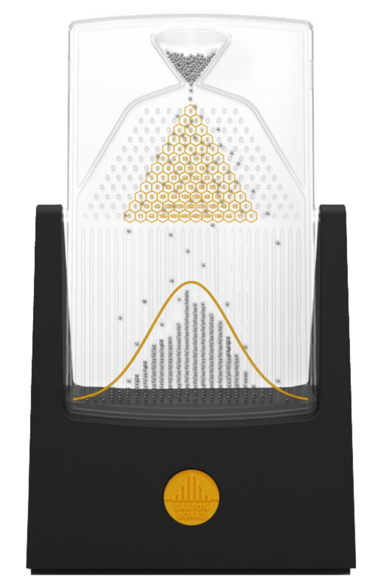
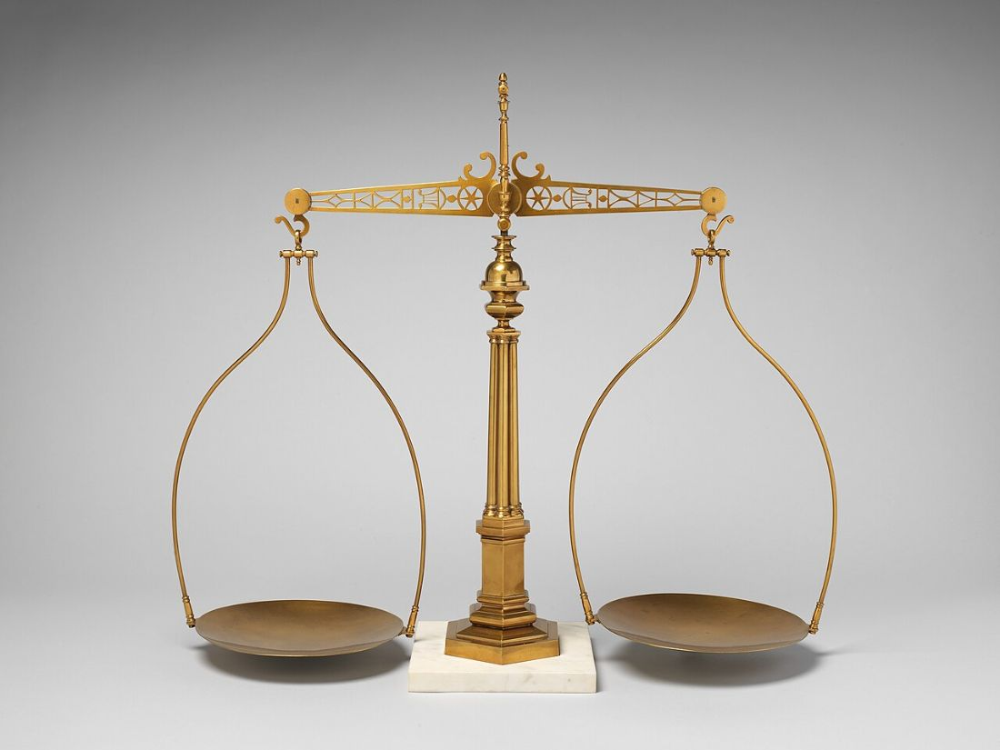
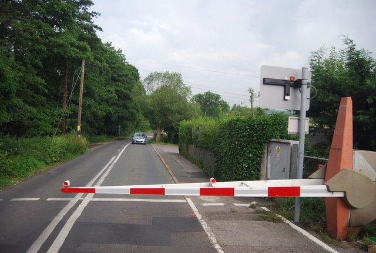
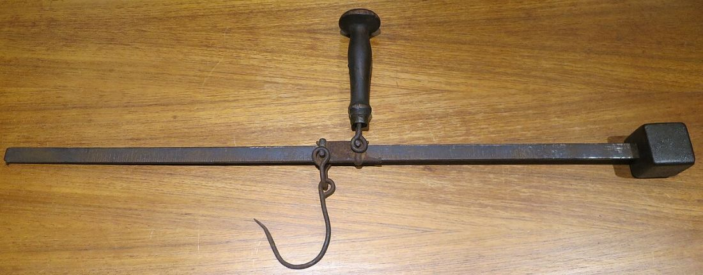
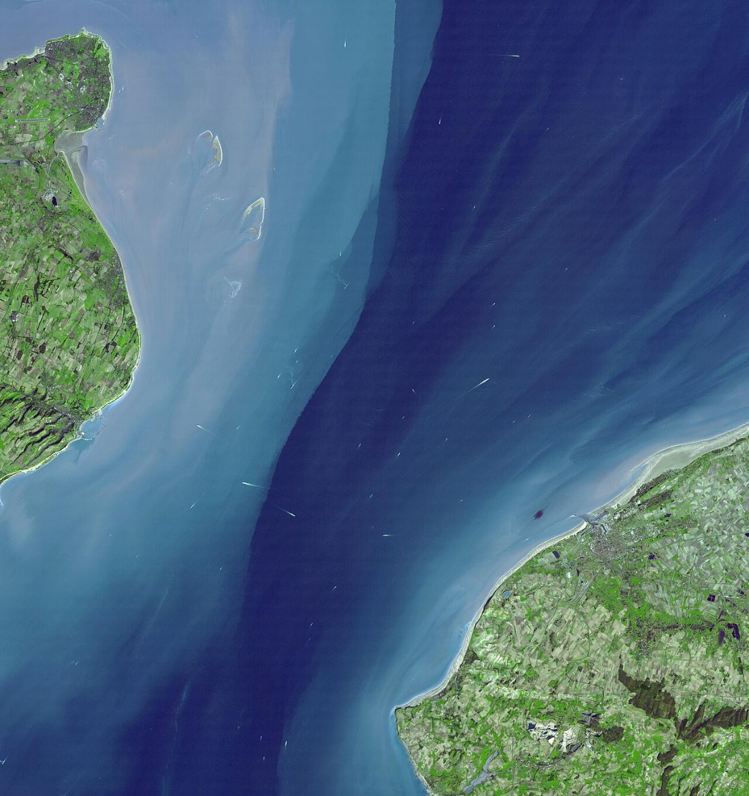
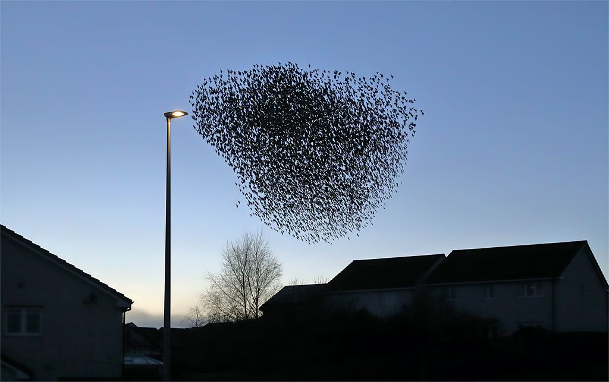
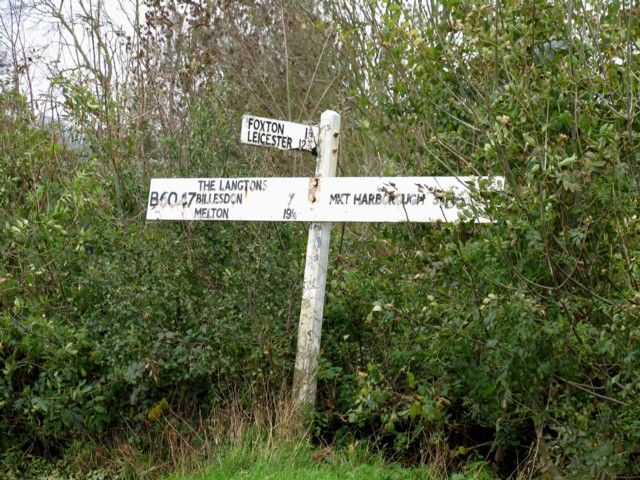

One feature · 5.1–5.5
about 75 min
5.1Video 5.1✓Fitting a normal curve: maximum likelihood16 min · Notes §5.1
5.2Video 5.2✓Why the average? The log-likelihood15 min · Notes §5.1
5.3Video 5.3✓One feature: the threshold from a formula21 min · Notes §5.4
5.4Video 5.4✓A shared spread moves the threshold9 min · Notes §5.4
5.5Video 5.5✓Different spreads: two boundaries14 min · Notes §5.4.1LIVELive page · with Video 5.5Where are the boundaries?Move the two curves yourself and watch one boundary become two.Two features · 5.6–5.11
about 97 min
5.6Video 5.6✓A class is a cloud: mean vector and covariance14 min · Notes §5.2 5.7Video 5.7✓Same distance, different density: Mahalanobis27 min · Notes §5.3
5.7Video 5.7✓Same distance, different density: Mahalanobis27 min · Notes §5.3 5.8Video 5.8✓Two features: LDA and QDA13 min · Notes §5.5
5.8Video 5.8✓Two features: LDA and QDA13 min · Notes §5.5 5.9Video 5.9✓Naive Bayes: the idea and the hand computation14 min · Notes §5.65.10Video 5.10✓Naive Bayes against QDA: when the features are correlated10 min · Notes §5.6
5.9Video 5.9✓Naive Bayes: the idea and the hand computation14 min · Notes §5.65.10Video 5.10✓Naive Bayes against QDA: when the features are correlated10 min · Notes §5.6
5.11Video 5.11✓Choosing a model, and Week 5 in Python19 min · Notes §5.5How to use the slides
- →Space
- next step (or tap the right side of the slide)
- ←
- back one step (or tap the left side)
- P
- pen over the slide: draw, then P or Esc to go on
- W
- whiteboard: a white sheet to draw on; W or Esc returns
- 1234
- with the pen: navy, coral, ink, highlighter · L laser · E eraser · Z undo · X clear · T hide the tray
- D
- derivation window, where a “how we get this” button shows
- C
- calculation window, where an “= how?” button shows
- ][
- next / previous video
- H
- this page
- F
- full screen
- ?
- all keys
On a phone or with the mouse, a small step pill sits at the bottom left: ‹ back, › next, and “step 2 of 4” for the slide you are on. Arabic keyboard: ح P, ص W, ي D, ؤ C, ا H. Keep all files and folders together; no internet is needed.
For the instructor: to record, open a video with ?rec at the end of its address (for example Video_5.1.html?rec), or press R once on this computer. Recording mode hides the step pill and every button; only the slide (and the pen tray, unless T hides it) is drawn. ?cam also draws the camera circle. Press R again for student mode.